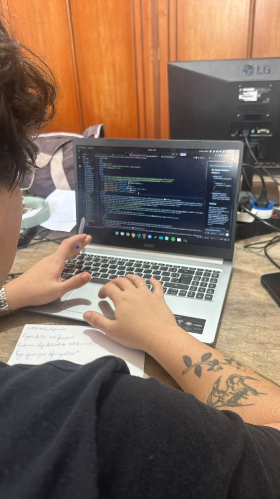
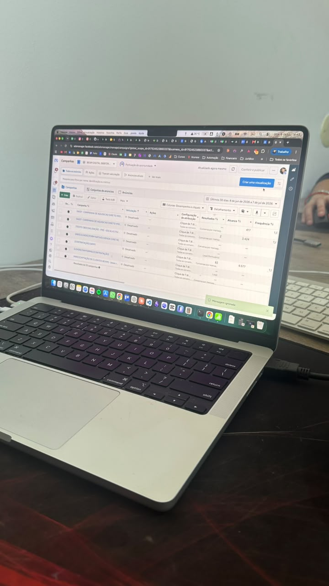
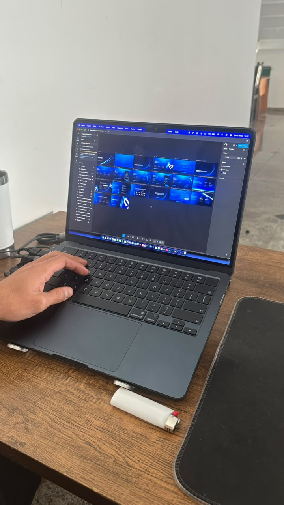
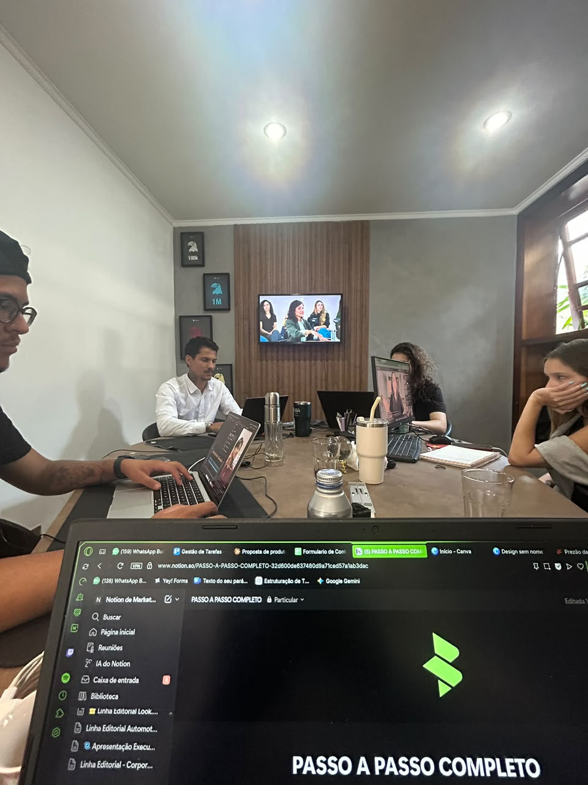
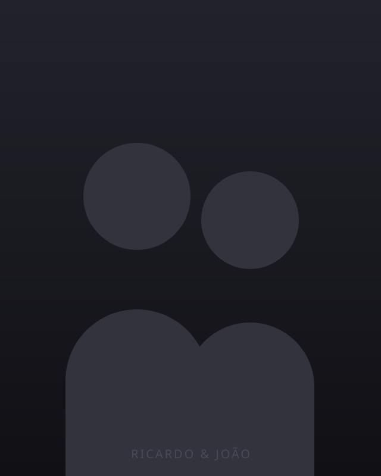

Gestão de Meta Ads e Google Ads para PMEs de São José do Rio Preto que faturam acima de R$ 30 mil/mês. Sem promessas, sem achismo.
Agendar Diagnóstico →Agência entrega entregável. Termina o briefing, manda o relatório e segue para o próximo cliente.
Assessoria senta do seu lado. Lê o dado com você, questiona a decisão antes do anúncio subir e projeta o que ninguém propôs. Não é fornecedor — é o time que a sua empresa ainda não montou.
É por isso que a Beam atende poucos, não muitos.




O processo que aplicamos em toda operação, do diagnóstico à otimização. Cada etapa com entrega clara — nada de trabalho invisível.
Análise da operação atual: o que está rodando, o que está travando e onde o dinheiro está vazando sem retorno. Sem custo, sem venda.
Definição de funil, público, mensagem e criativo. Metas atreladas ao faturamento, não ao alcance.
Acompanhamento semanal com leitura de dado, ajuste de campanha e teste estruturado. Relatório transparente e auditável.
Diagnóstico antes de escalar.
Se você marcou todos, o diagnóstico é o próximo passo.

À frente da Beam, responsáveis pela gestão de mais de R$ 30 milhões em mídia paga ao longo dos últimos anos. Especialistas em Meta Ads e Google Ads para PMEs em crescimento na região de Rio Preto.
Em até 48h, um especialista da Beam mapeia onde a sua operação está vazando lead e onde está o maior espaço de ganho — antes de qualquer proposta.
Agendar Diagnóstico →Sem custo · Sem compromisso · 6 perguntas rápidas